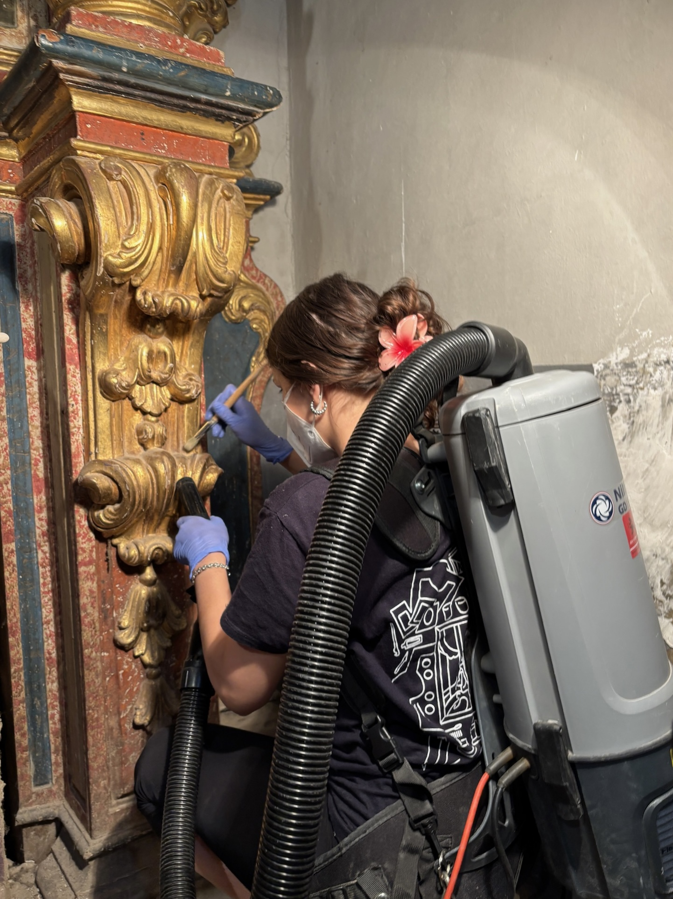
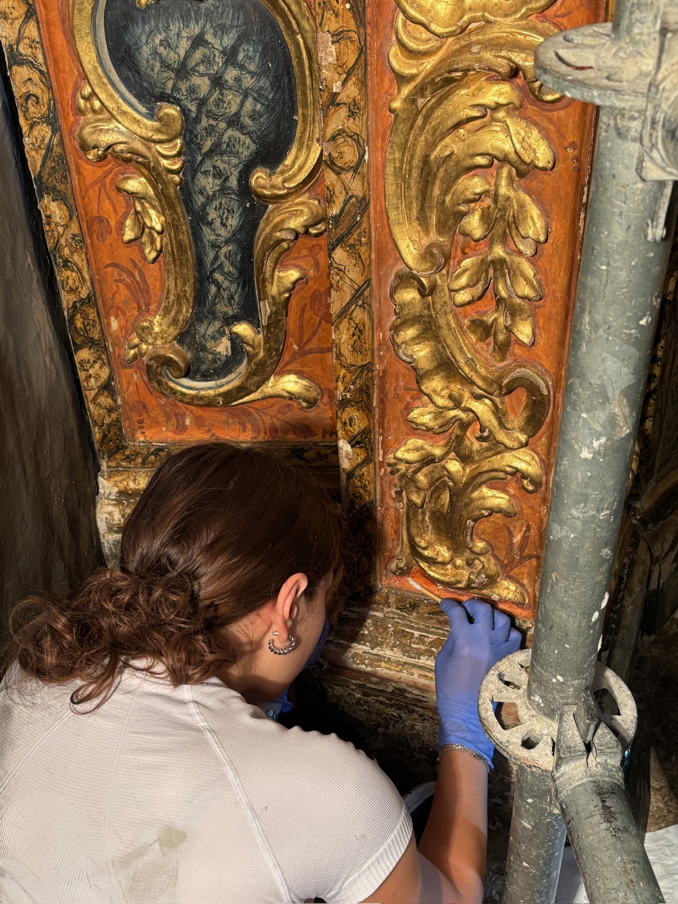
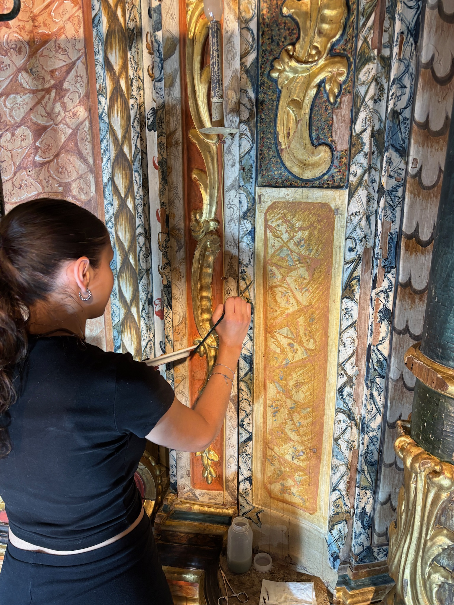

Retablo barroco del siglo XVIII.
Restauración del retablo de la Virgen del Rosario de la iglesia parroquial de Sant Joan Baptista de Palau de Noguera (Pallars Jussà). Un retablo barroco de 505 cm de altura, 331 cm de anchura y 135 cm de profundidad, realizado con dorados, colraduras y pintura al temple sobre madera. Las esculturas actuales, de yeso policromado, son del siglo XX y sustituyen a las originales, destruidas durante la Guerra Civil Española.
Prácticas organizadas por el ESCRBCC y coordinadas por los profesores Pau Claramonte y Lídia Balust, desarrolladas a lo largo de dos semanas.
Fase 01 · Documentación y examen organoléptico
Consolidación, limpieza y reintegración.
Los trabajos se centraron en la consolidación de la policromía y de los dorados originales, que presentaban levantamientos y riesgo de desprendimiento. Una vez estabilizada la capa pictórica, se procedió a la documentación gráfica y el examen organoléptico para determinar el estado de conservación.
Posteriormente, se llevó a cabo una limpieza mecánica y fisicoquímica de las diferentes superficies: dorados, policromías, madera vista y elementos escultóricos.
Fase 02 · Consolidación y limpiezaDetalles del proceso.
Fragmentos del trabajo diario: el gesto sobre la superficie, el detalle ornamental y el ritmo de la intervención.
Reintegración cromática.
Debido a la duración limitada del proyecto, no fue posible realizar el estucado de las pérdidas. Se efectuó una reintegración cromática de los perímetros de las lagunas para minimizar su impacto visual y mejorar la lectura del conjunto.
Fase 03 · Reintegración cromática

Trabajo en equipo.
Trabajar en un retablo de estas dimensiones me permitió profundizar en los procesos de consolidación y limpieza aplicados a estructuras policromadas y doradas, así como reforzar las competencias de trabajo en equipo y coordinación en una intervención de gran formato.
Competencias · gran formatoTodos los miembros del equipo participamos en las diferentes fases de la intervención, desde la consolidación hasta la limpieza y la reintegración cromática.
Antes y después.
El resultado del trabajo se mide en el cambio sobre la pieza. Arrastra el control para comparar el estado del retablo antes y después de la intervención.